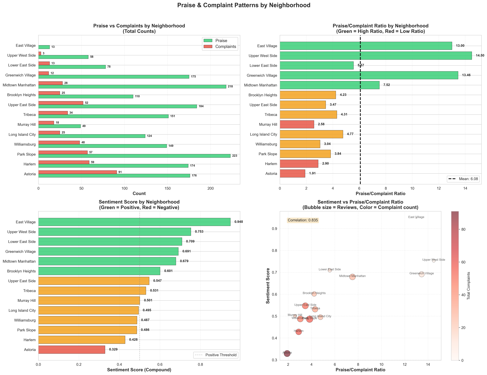
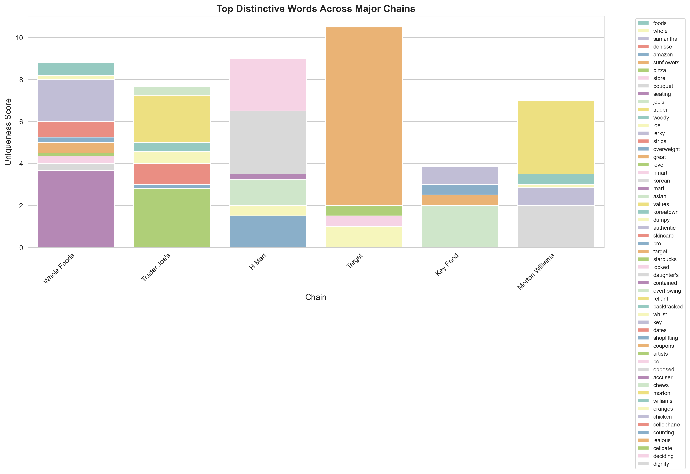
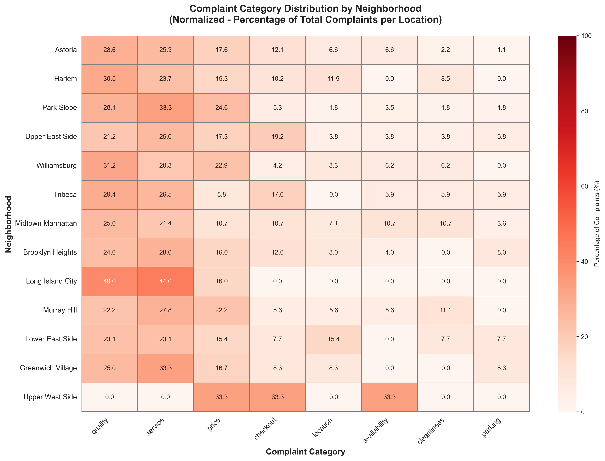
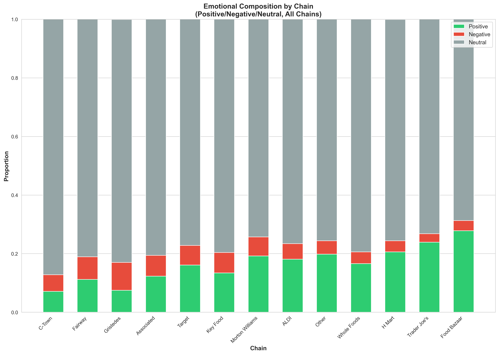

NYC supermarket secrets
What does the language of 1,331 Google Maps reviews reveal about how New Yorkers relate to where they shop? This project uses NLP to surface linguistic asymmetries across 267 stores, 14 chains, and 3 boroughs — asking whether vocabulary, sentiment, and complaint patterns vary by chain, neighbourhood, and socioeconomic context.
The pipeline: Google Places API for collection across 14 NYC neighbourhoods; VADER for sentence-level sentiment scoring; TF-IDF at store and chain level to surface distinctive vocabulary; keyword-based categorisation for complaint and praise types (quality, service, price, checkout, availability); vocabulary complexity metrics (diversity, word length, sentence length) as socioeconomic proxies; and a heuristic fake review detector using multi-factor scoring (generic language patterns, extreme sentiment, review length, absence of product specifics).
Key findings: Whole Foods reviewers use the most distinctive and complex vocabulary; Astoria and Harlem have the highest complaint-to-praise ratios; Long Island City concentrates complaints almost entirely in quality and service; Food Bazaar and Trader Joe's score highest on positive sentiment; 2.6% of reviews flagged as potentially fake — below industry average.



Stack: Python · Google Places API · NLTK · VADER · TF-IDF (scikit-learn) · pandas · matplotlib · seaborn
Role: data collection · NLP pipeline · sentiment analysis · data visualisation
Columbia University, 2025. Solo project.